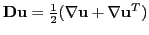
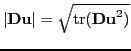
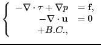
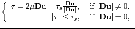
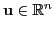
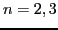
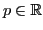
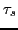
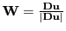
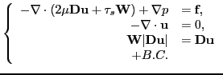

The Bingham fluid flow is a Stokes-type flow with shear-dependent viscosity. If

and
, its equations read

and

where the velocity

,
and
are the unknowns and
are given constants. A major difficulty of solving the Bingham equations numerically is the fact that its equations are singular for . We circumvent this by introducing an auxiliary variable
, the equations for the Bingham flow are then reformulated as

In this talk we will address the discretization and linearization of these (nonlinear) equations. We will then propose a multilevel preconditioner with additive Schwartz smoothings for efficiently solving the resulting linear systems. Numerical experiments will be presented to demonstrate the effectiveness of both the nonlinear and linear solver.
This work was performed under the auspices of the U.S. Department of Energy by Lawrence Livermore National Laboratory under Contract DE-AC52-07NA27344.